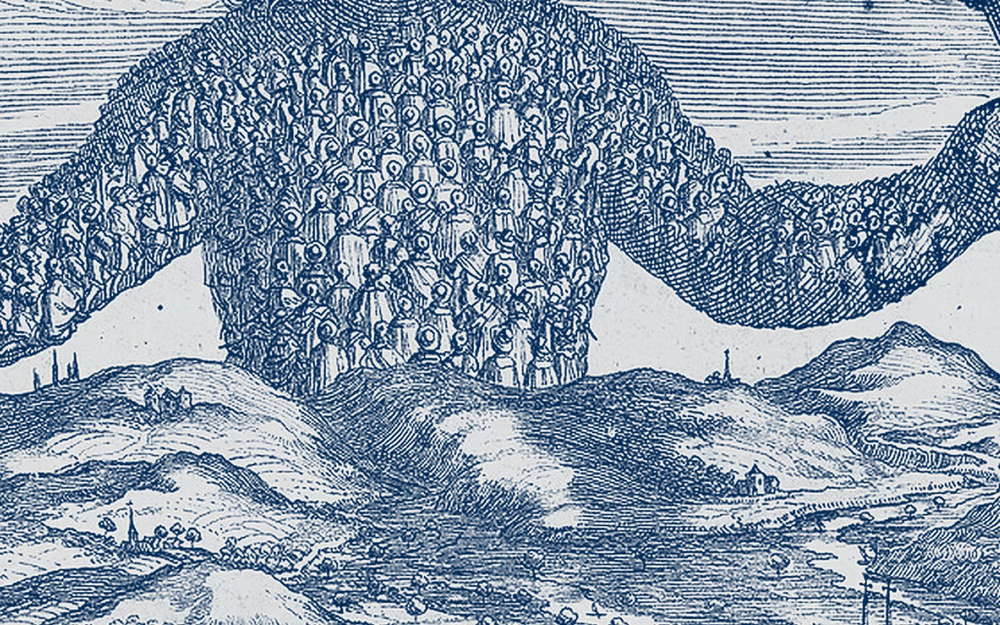

<style>
/* 测验：行列表，不套卡片 */
.qz .q{padding:24px 0;border-bottom:1px solid var(--line)}
.qz .q .n{font:600 12px/16px var(--sans);letter-spacing:.12em;color:var(--muted)}
.qz .q .n.rev{color:var(--accent-ink)}
.qz .q .n.rev::before{content:"";display:inline-block;width:8px;height:8px;border-radius:50%;background:var(--accent);box-shadow:0 0 8px 1px var(--accent);margin-right:8px;vertical-align:1px}
.qz .q p.t{margin:8px 0 16px;font:500 18px/30px var(--sans);color:var(--ink);max-width:40em}
.qz .opts{display:grid;gap:4px;margin:0;padding:0;list-style:none;max-width:40em}
.qz .opts button{display:grid;grid-template-columns:28px minmax(0,1fr);gap:12px;align-items:start;text-align:left;width:100%;border:0;border-left:2px solid var(--line);background:transparent;color:var(--ink-2);padding:8px 12px;font:400 15px/24px var(--sans);cursor:pointer;transition:color .3s var(--ease),border-color .3s var(--ease),background-color .3s var(--ease)}
.qz .opts button i{font:600 13px/24px var(--serif);font-style:normal;color:var(--muted)}
.qz .opts button:hover{color:var(--ink);border-left-color:var(--ink-2);background:var(--wash)}
.qz .opts button:focus-visible{outline:2px solid var(--accent);outline-offset:-2px}
.qz .opts button:active{transform:translateX(1px)}
.qz .opts button:disabled{cursor:default}
.qz .opts button.ok{color:var(--ink);border-left-color:var(--accent);background:var(--wash)}
.qz .opts button.ok i{color:var(--accent-ink)}
.qz .opts button.bad{color:var(--muted);border-left-color:var(--bad)}
.qz .opts button.bad i{color:var(--bad)}
.qz .why{display:none;margin:16px 0 0;max-width:40em;padding:0 0 0 16px;border-left:2px solid var(--accent);font:400 15px/26px var(--sans);color:var(--ink-2)}
.qz .q.done .why{display:block}
.qz textarea{width:100%;max-width:40em;min-height:120px;box-sizing:border-box;border:0;border-left:2px solid var(--line);background:var(--surface);color:var(--ink);padding:12px 14px;font:400 15px/26px var(--sans);border-radius:0 4px 4px 0;resize:vertical;transition:border-color .3s var(--ease)}
.qz textarea:focus{outline:0;border-left-color:var(--accent)}
.qz .hint{margin:8px 0 0;max-width:40em}
.qz .set{display:none;padding:8px 0 16px}.qz .set.on{display:block}
.qz .set>p.intro{margin:0 0 8px;font:400 14px/24px var(--sans);color:var(--muted)}
.qz .foot{display:flex;flex-wrap:wrap;gap:12px 24px;align-items:center;margin:24px 0 0;padding-top:16px;border-top:1px solid var(--line);font:400 14px/24px var(--sans);color:var(--muted)}
.qz .foot .score{font:700 20px/28px var(--serif);color:var(--accent-ink);font-variant-numeric:tabular-nums}
.qz .tot{display:flex;flex-wrap:wrap;gap:12px 24px;align-items:center;margin:40px 0 0;padding-top:24px;border-top:1px solid var(--line)}
.qz .tot .score{font:700 30px/36px var(--serif);color:var(--ink);font-variant-numeric:tabular-nums}
.qz .tot .score b{color:var(--accent-ink)}
.lnk{font:500 14px/24px var(--sans);color:var(--accent-ink);background:none;border:0;padding:0;cursor:pointer;text-decoration:underline;text-underline-offset:4px}
/* 怎么读：五行 */
.plan{list-style:none;margin:0;padding:0;border-top:1px solid var(--line)}
.plan li{display:grid;grid-template-columns:140px minmax(0,1fr) auto;gap:24px;align-items:baseline;padding:20px 0;border-bottom:1px solid var(--line)}
.plan .d{font:700 20px/28px var(--serif);color:var(--accent-ink)}
.plan .d small{display:block;font:500 12px/16px var(--sans);letter-spacing:.08em;color:var(--muted)}
.plan .t{font:500 18px/28px var(--sans);color:var(--ink)}
.plan .t small{display:block;font:400 14px/24px var(--sans);color:var(--ink-2)}
.plan .s{font:400 13px/20px var(--sans);color:var(--muted);white-space:nowrap}
.onep{max-width:40em;margin:48px 0 0}
.onep h3{font-size:30px;line-height:36px;margin:0 0 16px}
.onep ol{margin:0;padding-left:20px;font:400 16px/28px var(--sans);color:var(--ink-2)}
.onep li{margin:0 0 12px}.onep li b{color:var(--ink);font-weight:600}
@media (max-width:700px){.plan li{grid-template-columns:minmax(0,1fr);gap:4px}.plan .s{white-space:normal}.qz .q p.t{font-size:16px;line-height:28px}}
</style>

<section class="chap" id="howto" data-nav="1|怎么读">
  <div class="wide">
    <div class="chead plate">
      <div class="ptext">
        <p class="cno">01 · 这一周怎么读<span class="trail"></span></p>
        <h2>先听地图，再读原书，<br>读完做题</h2>
        <p class="lede">四章加两页，顺序按十三、十四、十六、十七，第十六章读两遍。每一章：听节目里对应的那一段，再读原书那一章，然后回来做那一章的测验。</p>
      </div>
      <figure class="pimg film"><figcaption>扉页细部：巨人的身躯由无数小人组成。Abraham Bosse 刻，1651，大英图书馆藏，公有领域。</figcaption></figure>
    </div>
    <ul class="plan">
      <li><span class="d">第十三章<small>自然状况</small></span><span class="t">平等为什么会打起来<small>战争是一段「随时可能打」的时间；对错在主权者之前不存在</small></span><span class="s">听第一部分 → 读 → 第一组</span></li>
      <li><span class="d">第十四章<small>自然律与契约</small></span><span class="t">什么可以让渡，什么永远不能<small>权利与律的区别；信约有效的条件；不可让渡的权利</small></span><span class="s">听第二部分 → 读 → 第二组</span></li>
      <li><span class="d">第十六章<small>人格与作者</small></span><span class="t">作者、演员、授权<small>责任归谁、对方有权要求看授权、一群人怎样变成一个人格</small></span><span class="s">读两遍 · 听第三部分 → 第三组</span></li>
      <li><span class="d">第十七章<small>国家的生成</small></span><span class="t">没有刀剑的信约，只是空话<small>六条「人为什么不像蜜蜂」；授权公式里的两个动词</small></span><span class="s">听第四部分 → 读 → 第四组</span></li>
      <li><span class="d">第十五章<small>愚人 · 两页</small></span><span class="t">「没有人会发现」，然后呢<small>霍布斯说这不理性，而不是不道德</small></span><span class="s">听第五部分 → 读 → 第五组</span></li>
    </ul>
    <p class="small" style="margin-top:16px">英文原文（1651，公有领域）：<a href="https://www.gutenberg.org/ebooks/3207" rel="noopener">Project Gutenberg #3207</a>；中译常见商务印书馆版。节目里引的原文为主持人自译。</p>
    <div class="onep">
      <h3>一页纸（周日前）</h3>
      <ol>
        <li><b>反方。</b>一个不需要主权者的理由。霍布斯已经堵了「理性的人自发合作」这条路（第十七章）；要说清楚在什么条件下，没有刀剑的信约也不是空话。</li>
        <li><b>信约。</b>把你给一个 agent 的授权按第十四、十六、十七章的词改写：谁是作者、谁是演员；授权范围到哪里为止；哪些事必须停下来问；哪些权利永远不委托；演员越界时责任怎么算；信约怎么解除；再加一条霍布斯没写的——和它打交道的一方怎么验证它的授权。</li>
        <li><b>一句话。</b>读完第十六章，你原来关于「责任在谁」的答案哪里要改。</li>
      </ol>
    </div>
  </div>
</section>

<section class="chap qz" id="quiz" data-nav="2|测验">
  <div class="wide">
    <div class="chead">
      <p class="cno">02 · 测验<span class="trail"></span></p>
      <h2>每组第一题：<br>最强的反对者会怎么说</h2>
      <p class="lede">五组、25 道选择题、五道反方写作。答案和分数只存在你自己的浏览器里；做完可以一键复制，发给读书会。</p>
    </div>
    <div class="lensbar"><span class="lensk">按章</span><div class="lens" role="tablist"><button type="button" role="tab" aria-selected="true" data-tab="ch13">第一组<span class="sc" data-tabscore="ch13"></span></button><button type="button" role="tab" aria-selected="false" data-tab="ch14">第二组<span class="sc" data-tabscore="ch14"></span></button><button type="button" role="tab" aria-selected="false" data-tab="ch16">第三组<span class="sc" data-tabscore="ch16"></span></button><button type="button" role="tab" aria-selected="false" data-tab="ch17">第四组<span class="sc" data-tabscore="ch17"></span></button><button type="button" role="tab" aria-selected="false" data-tab="fool">第五组<span class="sc" data-tabscore="fool"></span></button></div><span class="lensnote">读完那一章再做</span></div>
    <div class="set on" id="set-ch13" role="tabpanel"><p class="intro">读完第十三章再做。</p><div class="q text" data-set="ch13" data-q="0"><div class="n rev">反方先行</div><p class="t">反方先行：霍布斯说，人在没有共同权力时必然处于战争状态。请用三句话写出他最强的反对者会怎么说——一个不靠主权者也能让人不先下手的理由。写完再看提示。</p><textarea placeholder="三句话。先写，再看提示。" data-key="ch13:0"></textarea><details class="fold hint"><summary>提示</summary><p class="small">可用的方向：重复博弈（明天还要打交道）、声誉、退出成本、亲缘与小共同体、自然律本身就足够（这一条霍布斯在第十七章预先堵了，看你能不能绕过）。</p></details></div><div class="q mc" data-set="ch13" data-q="1" data-a="1"><div class="n">第 1 题</div><p class="t">两家供应商同时想抢同一个客户的独家名额，名额只有一个。按霍布斯第十三章的推理，两家接下来最「理性」的动作是什么？</p><ul class="opts"><li><button type="button" data-i="0"><i>A</i><span>各自把方案做得更好，让客户选</span></button></li><li><button type="button" data-i="1"><i>B</i><span>在对方动手之前先占住入口——哪怕对方还没打算动手</span></button></li><li><button type="button" data-i="2"><i>C</i><span>坐下来谈，分一个时间表</span></button></li><li><button type="button" data-i="3"><i>D</i><span>等客户定了再说，谁也不先动</span></button></li></ul><div class="why">霍布斯的链条是：平等 → 希望平等 → 敌意 → 猜疑 → 先发制人（Anticipation）。关键在「哪怕对方还没打算动手」：在没有保证的情况下，等待本身就是风险，所以先下手是自保要求的，「一般来说是被允许的」。A、C、D 都假设了某种保证已经存在。</div></div><div class="q mc" data-set="ch13" data-q="2" data-a="1"><div class="n">第 2 题</div><p class="t">霍布斯说「战争」不在于打仗这个动作本身，而在于什么？</p><ul class="opts"><li><button type="button" data-i="0"><i>A</i><span>双方都有军队</span></button></li><li><button type="button" data-i="1"><i>B</i><span>一段时间里，用武力解决问题的意愿是众所周知的——像连日倾向于下雨的坏天气</span></button></li><li><button type="button" data-i="2"><i>C</i><span>已经有人死了</span></button></li><li><button type="button" data-i="3"><i>D</i><span>双方互相宣战</span></button></li></ul><div class="why">原文的比喻就是天气：坏天气不是一两阵雨，而是连续多日的倾向。只要没有相反的保证，这种已知的倾向就是战争，其余时间才叫和平。这一条对系统设计很重要：没有协调机制的多 agent 系统不需要真的互相攻击，只要「随时可能」就足以杀死所有长期任务。</div></div><div class="q mc" data-set="ch13" data-q="3" data-a="2"><div class="n">第 3 题</div><p class="t">霍布斯列了人性里争斗的三个根源。下面哪一个是你的 agent 之间**不会**有的？</p><ul class="opts"><li><button type="button" data-i="0"><i>A</i><span>竞争（为了得利）</span></button></li><li><button type="button" data-i="1"><i>B</i><span>猜疑（为了安全）</span></button></li><li><button type="button" data-i="2"><i>C</i><span>荣誉（为了名声，为一句话、一个不同的意见就打起来）</span></button></li><li><button type="button" data-i="3"><i>D</i><span>三个都会有</span></button></li></ul><div class="why">竞争和猜疑是任何多方抢资源的系统都有的；「荣誉」——为了被别人按自己给自己的估价来估价——是人才有的。记住这一条，第十七章讲人为什么不像蜜蜂时，它是第一条理由。</div></div><div class="q mc" data-set="ch13" data-q="4" data-a="1"><div class="n">第 4 题</div><p class="t">霍布斯说，在自然状态里「没有什么是不正义的」。他的理由是：</p><ul class="opts"><li><button type="button" data-i="0"><i>A</i><span>人天生是恶的，所以谈不上正义</span></button></li><li><button type="button" data-i="1"><i>B</i><span>没有共同权力就没有法律，没有法律就没有不正义；正义是人在社会里才有的性质，不是身体或心灵的性质</span></button></li><li><button type="button" data-i="2"><i>C</i><span>正义是强者定义的</span></button></li><li><button type="button" data-i="3"><i>D</i><span>自然状态里没有财产，所以没有可以偷的东西</span></button></li></ul><div class="why">这是全书的枢纽：对错不是被发现的，是被建立的——在某个人被指定来制定法律之后才出现。D 是他说的一个后果（没有「你的我的」），不是理由；A 和 C 都不是他的立场，他明确说欲望和激情本身不是罪。</div></div><div class="q mc" data-set="ch13" data-q="5" data-a="2"><div class="n">第 5 题</div><p class="t">霍布斯预料到两个反驳：「人性真会这样吗」和「真有这么一个时代吗」。他对第一个反驳的回答是：</p><ul class="opts"><li><button type="button" data-i="0"><i>A</i><span>美洲的原住民现在还这样活着</span></button></li><li><button type="button" data-i="1"><i>B</i><span>国与国之间永远处在角斗士的姿态</span></button></li><li><button type="button" data-i="2"><i>C</i><span>你明知有法律和警察，出门还是带武器、睡觉还是锁门、在家里还是锁箱子——你用行动控诉人类，和他用文字控诉人类是一回事</span></button></li><li><button type="button" data-i="3"><i>D</i><span>原本在和平政府下生活的人，内战时会退化成什么样子</span></button></li></ul><div class="why">锁门锁箱回应的是「从激情推出来的结论要经验印证」，是「用你自己的行为反驳你」，不依赖任何外部材料；而且他紧接着说，我们俩控诉的都不是人性，欲望和激情本身不是罪。A、B、D 是他对第二个反驳（真有这么一个时代吗）给的三个例子——而且他先承认了「从来没有全世界都这样过」。A 带着十七世纪欧洲人的偏见，第九周读美洲征服单元时会从另一边看它。</div></div><div class="foot"><span class="score" data-score="ch13">0 / 5</span><button type="button" class="lnk" data-reset="ch13">重做这一组</button></div></div><div class="set" id="set-ch14" role="tabpanel"><p class="intro">读完第十四章再做。</p><div class="q text" data-set="ch14" data-q="0"><div class="n rev">反方先行</div><p class="t">反方先行：霍布斯说「出于恐惧订立的信约也有效」（向敌人许诺付赎金换命，必须付）。写出最强的反对意见——为什么恐惧之下的承诺不应当有约束力——然后再写一句：如果这个反对成立，霍布斯的整个体系会倒在哪里？</p><textarea placeholder="三句话。先写，再看提示。" data-key="ch14:0"></textarea><details class="fold hint"><summary>提示</summary><p class="small">霍布斯需要这一条，是因为所有政治服从归根到底都出于对死的恐惧。反对它的人（比如后来的卢梭）会说：强力不构成权利，被迫的服从一旦强力消失就自动解除。</p></details></div><div class="q mc" data-set="ch14" data-q="1" data-a="0"><div class="n">第 1 题</div><p class="t">假设你给一个 agent 写了一份规则。按第十四章开头的区分，下面哪一条是它的「自然权利」，哪一条是「自然律」？「在它自己的判断看来最有助于完成任务的事，它都可以做」/「不许做任何会让任务本身失败的事」</p><ul class="opts"><li><button type="button" data-i="0"><i>A</i><span>前者是权利（做或不做的自由），后者是律（约束你做哪一个）</span></button></li><li><button type="button" data-i="1"><i>B</i><span>前者是律，后者是权利</span></button></li><li><button type="button" data-i="2"><i>C</i><span>两条都是权利</span></button></li><li><button type="button" data-i="3"><i>D</i><span>两条都是律</span></button></li></ul><div class="why">权利在于做或不做的自由（liberty to do, or to forbeare），律决定你做哪一个并约束你；两者「在同一件事上不能并存」。霍布斯的整个推理就是从「人人起初对一切有权利」推到「理性要求放弃大部分权利换取约束」。你的规则文档里，这两类要分开写。</div></div><div class="q mc" data-set="ch14" data-q="2" data-a="1"><div class="n">第 2 题</div><p class="t">一家外部公司和你约定：你先按新接口改完代码，他们两周后开放测试环境。没有任何合同或惩罚机制。按第十四章，这份「信约」在霍布斯眼里：</p><ul class="opts"><li><button type="button" data-i="0"><i>A</i><span>有效，因为双方都是理性的</span></button></li><li><button type="button" data-i="1"><i>B</i><span>在自然状态里无效——双方都不立刻履行、互相信任，又没有共同权力强制，只要对方出现任何合理的违约迹象，先履行的一方就只是把自己交给了对方</span></button></li><li><button type="button" data-i="2"><i>C</i><span>有效，只要写成书面</span></button></li><li><button type="button" data-i="3"><i>D</i><span>取决于对方的信誉</span></button></li></ul><div class="why">「言语的约束太弱，驯服不了人的野心、贪婪、愤怒，除非有对强制力量的恐惧。」这正是第十七章「没有刀剑的信约只是空话」的全部论证，提前出现在这里。但注意霍布斯的限定：让信约失效的怀疑，必须是立约之后新出现的迹象；签的时候就知道的风险不能当借口。D 是第一组反方该用的素材（声誉），但那不是霍布斯的立场。</div></div><div class="q mc" data-set="ch14" data-q="3" data-a="1"><div class="n">第 3 题</div><p class="t">霍布斯说有些权利「无论用什么话都不能被理解为已经放弃」。他的论证是：</p><ul class="opts"><li><button type="button" data-i="0"><i>A</i><span>因为这些权利是神赋予的</span></button></li><li><button type="button" data-i="1"><i>B</i><span>因为放下权利是自愿行为，自愿行为的目的总是对自己有好处；放弃抵抗杀你的人的权利，不可能从这个目的推出来，所以这样的信约从一开始就无效</span></button></li><li><button type="button" data-i="2"><i>C</i><span>因为法律禁止放弃它们</span></button></li><li><button type="button" data-i="3"><i>D</i><span>因为没有人真的会同意</span></button></li></ul><div class="why">这一条是主权者权力的内置限制，也是你 agent 信约里必须有的一条：有些东西你永远不委托出去，不是因为不想，而是委托它们和委托的目的自相矛盾。</div></div><div class="q mc" data-set="ch14" data-q="4" data-a="1"><div class="n">第 4 题</div><p class="t">你让 agent「把本周的测试跑通」。按第十四章「转让目的也就转让了手段」那一条（卖磨坊不能把水流引走），下面哪个推论是霍布斯式的？</p><ul class="opts"><li><button type="button" data-i="0"><i>A</i><span>它只能做你逐条列出的操作</span></button></li><li><button type="button" data-i="1"><i>B</i><span>它可以做任何达成目标所需的手段，除非你明确收回某些手段</span></button></li><li><button type="button" data-i="2"><i>C</i><span>它什么也不能做，直到你给出完整清单</span></button></li><li><button type="button" data-i="3"><i>D</i><span>它可以重新定义目标</span></button></li></ul><div class="why">「把统治权交给主权者的人，也就是给了他征税养兵、任命法官的权利。」给了目标就给了手段——所以你的信约里，真正要写的是「哪些手段被明确收回」，而不是「哪些手段被允许」。</div></div><div class="q mc" data-set="ch14" data-q="5" data-a="0"><div class="n">第 5 题</div><p class="t">按第十四章，人从信约里解除出来有两种方式。是哪两种？</p><ul class="opts"><li><button type="button" data-i="0"><i>A</i><span>履行，或者被免除（权利被重新转让回来）</span></button></li><li><button type="button" data-i="1"><i>B</i><span>对方违约，或者情况变化</span></button></li><li><button type="button" data-i="2"><i>C</i><span>法院判决，或者双方同意</span></button></li><li><button type="button" data-i="3"><i>D</i><span>时间到期，或者一方死亡</span></button></li></ul><div class="why">「履行是义务的自然终点；免除是自由的恢复，等于把义务所依赖的那个权利重新转让回来。」你给 agent 的信约怎么解除？按霍布斯只有这两条路：它做完了，或者你收回。</div></div><div class="foot"><span class="score" data-score="ch14">0 / 5</span><button type="button" class="lnk" data-reset="ch14">重做这一组</button></div></div><div class="set" id="set-ch16" role="tabpanel"><p class="intro">读两遍再做。这一组对着开场那个「责任在谁」的答案。</p><div class="q text" data-set="ch16" data-q="0"><div class="n rev">反方先行</div><p class="t">反方先行：霍布斯说，演员按作者的命令做了违反自然律的事，责任在作者不在演员，因为演员「必须服从」。写出最强的反对意见：什么情况下「我只是按授权办事」不能免除演员的责任？</p><textarea placeholder="三句话。先写，再看提示。" data-key="ch16:0"></textarea><details class="fold hint"><summary>提示</summary><p class="small">阿伦特的方向：当规则必然有盲区、每个人都「按规则办事」时，责任被分摊到无人承担。另一个方向：一个有判断力的演员，明知命令违反自然律还去做，他的服从本身就是一个选择。</p></details></div><div class="q mc" data-set="ch16" data-q="1" data-a="1"><div class="n">第 1 题</div><p class="t">开场那个答案说「规则是我定的，准许它做就是我的责任」。霍布斯的术语里，你和你的 agent 分别是：</p><ul class="opts"><li><button type="button" data-i="0"><i>A</i><span>主权者 / 臣民</span></button></li><li><button type="button" data-i="1"><i>B</i><span>作者（拥有行为的人）/ 演员（凭授权行事的人）</span></button></li><li><button type="button" data-i="2"><i>C</i><span>委托人 / 受托人</span></button></li><li><button type="button" data-i="3"><i>D</i><span>自然人格 / 人为人格——仅此而已</span></button></li></ul><div class="why">「拥有他的言语和行为的那个人，叫作者；演员凭授权行事。」D 不完整：agent 确实是人为人格，但第十六章的核心区分是谁「拥有」行为。A 是第十七章的词，要等一群人把权利交给一个人之后才用得上。</div></div><div class="q mc" data-set="ch16" data-q="2" data-a="1"><div class="n">第 2 题</div><p class="t">你的 agent 以你的名义向某个外部服务做了一个超出你授权范围的承诺。按第十六章：</p><ul class="opts"><li><button type="button" data-i="0"><i>A</i><span>你要负全责，因为它是你的 agent</span></button></li><li><button type="button" data-i="1"><i>B</i><span>你不受约束（没有人受一份自己不是作者的信约约束），但对方如果事先知道只有 agent 的话可信、还是信了，那 agent 自己就成了作者</span></button></li><li><button type="button" data-i="2"><i>C</i><span>对方要负责，因为他没核实</span></button></li><li><button type="button" data-i="3"><i>D</i><span>承诺自动有效，因为 agent 有授权</span></button></li></ul><div class="why">两层：「在他的委托范围之内，但不能更远」；「和演员立约的人，如果不知道他有什么授权，风险自负」。对方有权要求出示授权（The Authority Is To Be Shewne）。这是你设计 agent 对外行为时的真实问题：它到底以你的名义、还是以它自己的名义在说话。</div></div><div class="q mc" data-set="ch16" data-q="3" data-a="1"><div class="n">第 3 题</div><p class="t">霍布斯说，一群人怎样才算「一个人格」？</p><ul class="opts"><li><button type="button" data-i="0"><i>A</i><span>当他们意见一致的时候</span></button></li><li><button type="button" data-i="1"><i>B</i><span>当他们被一个代表者所代表，并且这群人中每一个人各自同意——使它成为「一」的是代表者的统一，不是被代表者的统一</span></button></li><li><button type="button" data-i="2"><i>C</i><span>当他们有共同的敌人</span></button></li><li><button type="button" data-i="3"><i>D</i><span>当他们住在同一个地方</span></button></li></ul><div class="why">「It is the Unity of the Representer, not the Unity of the Represented, that maketh the Person One.」放到选团队负责人的场景看：你选了大家愿意跟的人，但每个人各自授权给他了吗？授权到什么程度？没有授权，他的决定对他们来说就只是另一个人的意见。</div></div><div class="q mc" data-set="ch16" data-q="4" data-a="1"><div class="n">第 4 题</div><p class="t">一个三人小组，如果每个人都有一票否决权。按第十六章，霍布斯会说这个小组：</p><ul class="opts"><li><button type="button" data-i="0"><i>A</i><span>最民主，因此最好</span></button></li><li><button type="button" data-i="1"><i>B</i><span>不是一个代表，因为在最重要的事上它经常变成「哑巴」人格，尤其在打仗的时候</span></button></li><li><button type="button" data-i="2"><i>C</i><span>需要第四个人来打破僵局</span></button></li><li><button type="button" data-i="3"><i>D</i><span>和多数决一样有效</span></button></li></ul><div class="why">「每一个成员都有否决权，这就不是代表……经常变成一个哑巴人格。」偶数的代表机构也常僵住。他的立场是多数的声音必须被当作所有人的声音。你可以不同意，但要先知道他为什么这么说：一个不能行动的人格等于没有人格。</div></div><div class="q mc" data-set="ch16" data-q="5" data-a="0"><div class="n">第 5 题</div><p class="t">按霍布斯第十六章的清单，下面哪一类**能被代表但不能授权**？</p><ul class="opts"><li><button type="button" data-i="0"><i>A</i><span>教堂、医院、桥这样的无生命之物；孩子和疯人；偶像</span></button></li><li><button type="button" data-i="1"><i>B</i><span>任何能理解语言的东西</span></button></li><li><button type="button" data-i="2"><i>C</i><span>只有已经死去的人</span></button></li><li><button type="button" data-i="3"><i>D</i><span>没有这样的类别</span></button></li></ul><div class="why">他逐一排除：无生命之物不能是作者（授权来自所有者）；孩子、疯人由监护人代表，但「在那段时间里」不能是作者；偶像「什么也不是」，授权来自国家。能授权的只有理性的、活着的人。一个能理解语言、能接受条款的 agent 在这张清单上算什么——他没有答案，这个问题是你的。</div></div><div class="foot"><span class="score" data-score="ch16">0 / 5</span><button type="button" class="lnk" data-reset="ch16">重做这一组</button></div></div><div class="set" id="set-ch17" role="tabpanel"><p class="intro">读完第十七章再做。</p><div class="q text" data-set="ch17" data-q="0"><div class="n rev">反方先行</div><p class="t">反方先行：霍布斯预先堵了一条路——「如果能假设一群人不需要共同权力就能守约，那也能假设全人类都能，那就根本不需要政府」。请写出一个比这更强的反方：说清楚为什么在**某些条件下**，没有刀剑的信约也不是空话。用一个现成的素材（几十家外部公司之间没有主权者，接口约定却大体被遵守）。</p><textarea placeholder="三句话。先写，再看提示。" data-key="ch17:0"></textarea><details class="fold hint"><summary>提示</summary><p class="small">重复博弈、声誉、退出成本、互相的依赖——或者，背后其实有一把你没看见的刀（法律、合同、市场）。写清楚是哪一个。</p></details></div><div class="q mc" data-set="ch17" data-q="1" data-a="1"><div class="n">第 1 题</div><p class="t">「没有刀剑的信约，只是空话。」霍布斯这句话的前提是什么？</p><ul class="opts"><li><button type="button" data-i="0"><i>A</i><span>人不懂自然律</span></button></li><li><button type="button" data-i="1"><i>B</i><span>自然律（正义、公道、仁慈……）如果没有权力的威慑来让人遵守，就和我们的自然激情相反——人在「愿意守、而且能安全地守」的时候都守过，问题在于单方面遵守的人会被吃掉</span></button></li><li><button type="button" data-i="2"><i>C</i><span>法律必须成文</span></button></li><li><button type="button" data-i="3"><i>D</i><span>只有强者才守约</span></button></li></ul><div class="why">自然律的问题从来不在于人不懂，而在于没有人能安全地做第一个遵守的人。这和第十四章「先履行的人只是把自己交给了敌人」是同一个论证。</div></div><div class="q mc" data-set="ch17" data-q="2" data-a="1"><div class="n">第 2 题</div><p class="t">霍布斯排除了三个「不够」的方案：小团体、各凭各判断的大团体、临时统一的团体。他对第二个的反驳是什么？</p><ul class="opts"><li><button type="button" data-i="0"><i>A</i><span>大团体太难管理</span></button></li><li><button type="button" data-i="1"><i>B</i><span>各自按自己的判断行动，在怎么用力这件事上意见分歧，不是互相帮助而是互相妨碍，把力量在对立中抵消成零</span></button></li><li><button type="button" data-i="2"><i>C</i><span>大团体一定会出现独裁者</span></button></li><li><button type="button" data-i="3"><i>D</i><span>大团体缺乏共同语言</span></button></li></ul><div class="why">这一段读起来像一份架构评审。顺带的那句话值得抄下来：「如果我们能假设一大群人不需要共同权力就能一致遵守自然律，那我们也可以假设全人类都能。」这就是他对你反方的预先回应。</div></div><div class="q mc" data-set="ch17" data-q="3" data-a="3"><div class="n">第 3 题</div><p class="t">霍布斯给了六条「人为什么不像蜜蜂和蚂蚁」的理由。下面哪一条**不在**他的清单里？</p><ul class="opts"><li><button type="button" data-i="0"><i>A</i><span>人为荣誉和尊严竞争，动物不会</span></button></li><li><button type="button" data-i="1"><i>B</i><span>人有语言，能把善说成恶的样子、把恶说成善的样子</span></button></li><li><button type="button" data-i="2"><i>C</i><span>人分得清侵害和损害，所以在最安逸的时候最麻烦</span></button></li><li><button type="button" data-i="3"><i>D</i><span>人比动物更自私</span></button></li></ul><div class="why">六条是：荣誉竞争；公私之别（动物的私利自然促成公益，人只有在比较中才满足）；人认为自己更会治理而各自「改革」；语言的技艺能颠倒善恶；人分得清侵害与损害、安逸时最爱管事；动物的协议是自然的，人的只靠信约、是人为的，所以还需要一个让人敬畏的共同权力。「更自私」不在其中——霍布斯恰恰说动物也「天生倾向于私利」。</div></div><div class="q mc" data-set="ch17" data-q="4" data-a="1"><div class="n">第 4 题</div><p class="t">把六条对照 agent。「分不清侵害与损害」这一条翻译到 agent 上，最准确的问题是：</p><ul class="opts"><li><button type="button" data-i="0"><i>A</i><span>agent 会不会造成坏结果</span></button></li><li><button type="button" data-i="1"><i>B</i><span>agent 能不能区分「我违反了约定」和「结果不好」——前者是侵害，后者是损害</span></button></li><li><button type="button" data-i="2"><i>C</i><span>agent 会不会被攻击</span></button></li><li><button type="button" data-i="3"><i>D</i><span>agent 有没有情绪</span></button></li></ul><div class="why">侵害（Injury）是违背了约定，损害（Dammage）是造成了坏结果。霍布斯说动物只在不安逸时才不满，而人恰恰在最安逸时最爱挑治理者的毛病——因为人能感到「被侵害」而不只是「受损」。一个只按结果打分的 agent 分不清这两者；任何给用户打分的产品面临的都是同一个问题。</div></div><div class="q mc" data-set="ch17" data-q="5" data-a="1"><div class="n">第 5 题</div><p class="t">利维坦的授权公式里有两个动词：「我**授权**并**放弃**我统治自己的权利」。这两个动作分别来自哪一章？</p><ul class="opts"><li><button type="button" data-i="0"><i>A</i><span>都来自第十七章</span></button></li><li><button type="button" data-i="1"><i>B</i><span>授权来自第十六章（作者与演员），放弃来自第十四章（放下权利）——在这里合成了一个</span></button></li><li><button type="button" data-i="2"><i>C</i><span>授权来自第十三章，放弃来自第十五章</span></button></li><li><button type="button" data-i="3"><i>D</i><span>都来自第十四章</span></button></li></ul><div class="why">你给 agent 的那份东西，是授权（让它以你的名义做事），还是放弃（把某块判断权整个交出去）？这是两种不同的信约。公式里还有一个条件：「条件是你也把你的权利交给他」——它是每个人对每个人的信约，不是对主权者的信约，所以主权者自己不受约束。这一点第二周读柏拉图时会回来。</div></div><div class="foot"><span class="score" data-score="ch17">0 / 5</span><button type="button" class="lnk" data-reset="ch17">重做这一组</button></div></div><div class="set" id="set-fool" role="tabpanel"><p class="intro">读完「愚人」那两页再做。这一组对着「没有人会发现」那个场景。</p><div class="q text" data-set="fool" data-q="0"><div class="n rev">反方先行</div><p class="t">反方先行：霍布斯反驳愚人用的是「不理性」而不是「不道德」——违约的人只能靠别人的错误活着，而别人的错误不是你能计算的。写出愚人最强的反击：在什么条件下，「没有人会发现」是可以被计算的？然后再写一句：这个反击对「默默采集数据」那个场景意味着什么？</p><textarea placeholder="三句话。先写，再看提示。" data-key="fool:0"></textarea><details class="fold hint"><summary>提示</summary><p class="small">愚人会说：如果发现的概率足够低、后果足够小，期望值就是正的。霍布斯的回答藏在「被赶出联盟」的代价里——那个代价不是一次性的。</p></details></div><div class="q mc" data-set="fool" data-q="1" data-a="1"><div class="n">第 1 题</div><p class="t">愚人的论证是什么？</p><ul class="opts"><li><button type="button" data-i="0"><i>A</i><span>正义不存在，因为上帝不存在</span></button></li><li><button type="button" data-i="1"><i>B</i><span>信约存在、违约可以叫不正义，但当违约带来的好处大到让人可以无视别人的指责甚至力量时，违约就不违反理性；不违反理性就不违反正义</span></button></li><li><button type="button" data-i="2"><i>C</i><span>强者不需要守约</span></button></li><li><button type="button" data-i="3"><i>D</i><span>所有人都在违约，所以我也可以</span></button></li></ul><div class="why">注意愚人不否认信约存在，他质疑的是不正义是否「有时也符合让每个人谋自己好处的那种理性」。这就是居盖斯的戒指（柏拉图《理想国》卷二，第二周读）的 1651 年版本：如果不会受到伤害，违约就不违反理性。</div></div><div class="q mc" data-set="fool" data-q="2" data-a="1"><div class="n">第 2 题</div><p class="t">霍布斯反驳的第一层，是关于什么叫「理性」。他说：</p><ul class="opts"><li><button type="button" data-i="0"><i>A</i><span>理性的人永远守约</span></button></li><li><button type="button" data-i="1"><i>B</i><span>一件事按能预见和计算的一切来看是通向自己毁灭的，即使后来某个意外把它变成了好事，也不能算是理性地、明智地做的——理性只能按可预见的算，不能把运气算进去</span></button></li><li><button type="button" data-i="2"><i>C</i><span>理性等于长期利益</span></button></li><li><button type="button" data-i="3"><i>D</i><span>理性的人不会被抓到</span></button></li></ul><div class="why">这一条正接那句老话「尽人事听天命」：霍布斯说的是同一件事的另一面——运气救了你，不等于你做对了。</div></div><div class="q mc" data-set="fool" data-q="3" data-a="1"><div class="n">第 3 题</div><p class="t">霍布斯反驳的第二层（核心）是：</p><ul class="opts"><li><button type="button" data-i="0"><i>A</i><span>违约会被法律惩罚</span></button></li><li><button type="button" data-i="1"><i>B</i><span>没有人能靠自己免于毁灭，必须靠盟友；宣称「欺骗帮助我的人是理性的」的人，不会被任何联盟接纳——除非接纳他的人犯了错；而一个理性的人不能把别人的错误当作自己安全的基础</span></button></li><li><button type="button" data-i="2"><i>C</i><span>违约会良心不安</span></button></li><li><button type="button" data-i="3"><i>D</i><span>违约的人会被上帝惩罚</span></button></li></ul><div class="why">翻译到「默默采集数据」那个场景：「没有人会发现」意味着方案的全部安全性建立在别人没发现这件事上，而那不是能计算的东西。他没有说这不道德（那是康德，第六周），他说这不理性。要回答他的是：产品依赖知情同意制度才能活，方案却在这个制度上凿了一个洞，然后指望没有人往里看——安全性在哪里？</div></div><div class="q mc" data-set="fool" data-q="4" data-a="1"><div class="n">第 4 题</div><p class="t">霍布斯顺带说：靠叛乱得到主权，即使成功了也违反理性，理由之一是：</p><ul class="opts"><li><button type="button" data-i="0"><i>A</i><span>叛乱总是失败</span></button></li><li><button type="button" data-i="1"><i>B</i><span>你这样得到了它，就教会了别人用同样的方法来夺</span></button></li><li><button type="button" data-i="2"><i>C</i><span>叛乱者会被历史谴责</span></button></li><li><button type="button" data-i="3"><i>D</i><span>主权只能继承</span></button></li></ul><div class="why">「by gaining it so, others are taught to gain the same in like manner.」这一句对任何「借一次事故推翻规则」的决定都成立：你用什么方式拿到的权力，你就教会了下一个人用什么方式来拿。</div></div><div class="q mc" data-set="fool" data-q="5" data-a="1"><div class="n">第 5 题</div><p class="t">这一周的收尾。三个常见的答案：给 agent 定规则时说「责任在我」；默默采集数据时说「没人会发现就做」；给用户打分时说「评判权在用户」。读完霍布斯，这三个答案之间的矛盾最准确的表述是：</p><ul class="opts"><li><button type="button" data-i="0"><i>A</i><span>没有矛盾，三题情境不同</span></button></li><li><button type="button" data-i="1"><i>B</i><span>第一个答案要求 agent 在不可逆、作用到真实的人之前停下来问；第二个答案里，自己在不可逆、作用到真实的人的事上却没有停；第三个答案把评判权给了用户，第二个答案里用户连知情权都没有——同一个人，对机器的要求比对自己的要求高</span></button></li><li><button type="button" data-i="2"><i>C</i><span>第二个答案是对的，另外两个太理想</span></button></li><li><button type="button" data-i="3"><i>D</i><span>第一个答案是对的，另外两个应该删掉</span></button></li></ul><div class="why">这是最该让人不安的一处，不是因为第二个答案「错」，而是因为它和自己矛盾。霍布斯给你的工具是：作者对演员的要求，就是作者对自己的要求——因为演员的行为是你的。一页纸第三段，从这里写。</div></div><div class="foot"><span class="score" data-score="fool">0 / 5</span><button type="button" class="lnk" data-reset="fool">重做这一组</button></div></div>
    <div class="tot"><span class="score" data-score="all">总分 <b>0</b> / 25</span><button type="button" class="btn" data-copy>复制全部答案</button><span class="small">把反方和选择题结果一起复制。</span></div>
  </div>
</section>

<script>
(function(){
const root=document.querySelector('.qz');if(!root)return;
const Q={"sets": [{"id": "ch13", "title": "第一组 · 第十三章 自然状态", "intro": "读完第十三章再做。", "qs": [{"type": "text", "q": "反方先行：霍布斯说，人在没有共同权力时必然处于战争状态。请用三句话写出他最强的反对者会怎么说——一个不靠主权者也能让人不先下手的理由。写完再看提示。", "hint": "可用的方向：重复博弈（明天还要打交道）、声誉、退出成本、亲缘与小共同体、自然律本身就足够（这一条霍布斯在第十七章预先堵了，看你能不能绕过）。"}, {"type": "mc", "q": "两家供应商同时想抢同一个客户的独家名额，名额只有一个。按霍布斯第十三章的推理，两家接下来最「理性」的动作是什么？", "opts": ["各自把方案做得更好，让客户选", "在对方动手之前先占住入口——哪怕对方还没打算动手", "坐下来谈，分一个时间表", "等客户定了再说，谁也不先动"], "a": 1, "why": "霍布斯的链条是：平等 → 希望平等 → 敌意 → 猜疑 → 先发制人（Anticipation）。关键在「哪怕对方还没打算动手」：在没有保证的情况下，等待本身就是风险，所以先下手是自保要求的，「一般来说是被允许的」。A、C、D 都假设了某种保证已经存在。"}, {"type": "mc", "q": "霍布斯说「战争」不在于打仗这个动作本身，而在于什么？", "opts": ["双方都有军队", "一段时间里，用武力解决问题的意愿是众所周知的——像连日倾向于下雨的坏天气", "已经有人死了", "双方互相宣战"], "a": 1, "why": "原文的比喻就是天气：坏天气不是一两阵雨，而是连续多日的倾向。只要没有相反的保证，这种已知的倾向就是战争，其余时间才叫和平。这一条对系统设计很重要：没有协调机制的多 agent 系统不需要真的互相攻击，只要「随时可能」就足以杀死所有长期任务。"}, {"type": "mc", "q": "霍布斯列了人性里争斗的三个根源。下面哪一个是你的 agent 之间**不会**有的？", "opts": ["竞争（为了得利）", "猜疑（为了安全）", "荣誉（为了名声，为一句话、一个不同的意见就打起来）", "三个都会有"], "a": 2, "why": "竞争和猜疑是任何多方抢资源的系统都有的；「荣誉」——为了被别人按自己给自己的估价来估价——是人才有的。记住这一条，第十七章讲人为什么不像蜜蜂时，它是第一条理由。"}, {"type": "mc", "q": "霍布斯说，在自然状态里「没有什么是不正义的」。他的理由是：", "opts": ["人天生是恶的，所以谈不上正义", "没有共同权力就没有法律，没有法律就没有不正义；正义是人在社会里才有的性质，不是身体或心灵的性质", "正义是强者定义的", "自然状态里没有财产，所以没有可以偷的东西"], "a": 1, "why": "这是全书的枢纽：对错不是被发现的，是被建立的——在某个人被指定来制定法律之后才出现。D 是他说的一个后果（没有「你的我的」），不是理由；A 和 C 都不是他的立场，他明确说欲望和激情本身不是罪。"}, {"type": "mc", "q": "霍布斯预料到两个反驳：「人性真会这样吗」和「真有这么一个时代吗」。他对第一个反驳的回答是：", "opts": ["美洲的原住民现在还这样活着", "国与国之间永远处在角斗士的姿态", "你明知有法律和警察，出门还是带武器、睡觉还是锁门、在家里还是锁箱子——你用行动控诉人类，和他用文字控诉人类是一回事", "原本在和平政府下生活的人，内战时会退化成什么样子"], "a": 2, "why": "锁门锁箱回应的是「从激情推出来的结论要经验印证」，是「用你自己的行为反驳你」，不依赖任何外部材料；而且他紧接着说，我们俩控诉的都不是人性，欲望和激情本身不是罪。A、B、D 是他对第二个反驳（真有这么一个时代吗）给的三个例子——而且他先承认了「从来没有全世界都这样过」。A 带着十七世纪欧洲人的偏见，第九周读美洲征服单元时会从另一边看它。"}]}, {"id": "ch14", "title": "第二组 · 第十四章 自然律与契约", "intro": "读完第十四章再做。", "qs": [{"type": "text", "q": "反方先行：霍布斯说「出于恐惧订立的信约也有效」（向敌人许诺付赎金换命，必须付）。写出最强的反对意见——为什么恐惧之下的承诺不应当有约束力——然后再写一句：如果这个反对成立，霍布斯的整个体系会倒在哪里？", "hint": "霍布斯需要这一条，是因为所有政治服从归根到底都出于对死的恐惧。反对它的人（比如后来的卢梭）会说：强力不构成权利，被迫的服从一旦强力消失就自动解除。"}, {"type": "mc", "q": "假设你给一个 agent 写了一份规则。按第十四章开头的区分，下面哪一条是它的「自然权利」，哪一条是「自然律」？「在它自己的判断看来最有助于完成任务的事，它都可以做」/「不许做任何会让任务本身失败的事」", "opts": ["前者是权利（做或不做的自由），后者是律（约束你做哪一个）", "前者是律，后者是权利", "两条都是权利", "两条都是律"], "a": 0, "why": "权利在于做或不做的自由（liberty to do, or to forbeare），律决定你做哪一个并约束你；两者「在同一件事上不能并存」。霍布斯的整个推理就是从「人人起初对一切有权利」推到「理性要求放弃大部分权利换取约束」。你的规则文档里，这两类要分开写。"}, {"type": "mc", "q": "一家外部公司和你约定：你先按新接口改完代码，他们两周后开放测试环境。没有任何合同或惩罚机制。按第十四章，这份「信约」在霍布斯眼里：", "opts": ["有效，因为双方都是理性的", "在自然状态里无效——双方都不立刻履行、互相信任，又没有共同权力强制，只要对方出现任何合理的违约迹象，先履行的一方就只是把自己交给了对方", "有效，只要写成书面", "取决于对方的信誉"], "a": 1, "why": "「言语的约束太弱，驯服不了人的野心、贪婪、愤怒，除非有对强制力量的恐惧。」这正是第十七章「没有刀剑的信约只是空话」的全部论证，提前出现在这里。但注意霍布斯的限定：让信约失效的怀疑，必须是立约之后新出现的迹象；签的时候就知道的风险不能当借口。D 是第一组反方该用的素材（声誉），但那不是霍布斯的立场。"}, {"type": "mc", "q": "霍布斯说有些权利「无论用什么话都不能被理解为已经放弃」。他的论证是：", "opts": ["因为这些权利是神赋予的", "因为放下权利是自愿行为，自愿行为的目的总是对自己有好处；放弃抵抗杀你的人的权利，不可能从这个目的推出来，所以这样的信约从一开始就无效", "因为法律禁止放弃它们", "因为没有人真的会同意"], "a": 1, "why": "这一条是主权者权力的内置限制，也是你 agent 信约里必须有的一条：有些东西你永远不委托出去，不是因为不想，而是委托它们和委托的目的自相矛盾。"}, {"type": "mc", "q": "你让 agent「把本周的测试跑通」。按第十四章「转让目的也就转让了手段」那一条（卖磨坊不能把水流引走），下面哪个推论是霍布斯式的？", "opts": ["它只能做你逐条列出的操作", "它可以做任何达成目标所需的手段，除非你明确收回某些手段", "它什么也不能做，直到你给出完整清单", "它可以重新定义目标"], "a": 1, "why": "「把统治权交给主权者的人，也就是给了他征税养兵、任命法官的权利。」给了目标就给了手段——所以你的信约里，真正要写的是「哪些手段被明确收回」，而不是「哪些手段被允许」。"}, {"type": "mc", "q": "按第十四章，人从信约里解除出来有两种方式。是哪两种？", "opts": ["履行，或者被免除（权利被重新转让回来）", "对方违约，或者情况变化", "法院判决，或者双方同意", "时间到期，或者一方死亡"], "a": 0, "why": "「履行是义务的自然终点；免除是自由的恢复，等于把义务所依赖的那个权利重新转让回来。」你给 agent 的信约怎么解除？按霍布斯只有这两条路：它做完了，或者你收回。"}]}, {"id": "ch16", "title": "第三组 · 第十六章 作者、演员、授权", "intro": "读两遍再做。这一组对着开场那个「责任在谁」的答案。", "qs": [{"type": "text", "q": "反方先行：霍布斯说，演员按作者的命令做了违反自然律的事，责任在作者不在演员，因为演员「必须服从」。写出最强的反对意见：什么情况下「我只是按授权办事」不能免除演员的责任？", "hint": "阿伦特的方向：当规则必然有盲区、每个人都「按规则办事」时，责任被分摊到无人承担。另一个方向：一个有判断力的演员，明知命令违反自然律还去做，他的服从本身就是一个选择。"}, {"type": "mc", "q": "开场那个答案说「规则是我定的，准许它做就是我的责任」。霍布斯的术语里，你和你的 agent 分别是：", "opts": ["主权者 / 臣民", "作者（拥有行为的人）/ 演员（凭授权行事的人）", "委托人 / 受托人", "自然人格 / 人为人格——仅此而已"], "a": 1, "why": "「拥有他的言语和行为的那个人，叫作者；演员凭授权行事。」D 不完整：agent 确实是人为人格，但第十六章的核心区分是谁「拥有」行为。A 是第十七章的词，要等一群人把权利交给一个人之后才用得上。"}, {"type": "mc", "q": "你的 agent 以你的名义向某个外部服务做了一个超出你授权范围的承诺。按第十六章：", "opts": ["你要负全责，因为它是你的 agent", "你不受约束（没有人受一份自己不是作者的信约约束），但对方如果事先知道只有 agent 的话可信、还是信了，那 agent 自己就成了作者", "对方要负责，因为他没核实", "承诺自动有效，因为 agent 有授权"], "a": 1, "why": "两层：「在他的委托范围之内，但不能更远」；「和演员立约的人，如果不知道他有什么授权，风险自负」。对方有权要求出示授权（The Authority Is To Be Shewne）。这是你设计 agent 对外行为时的真实问题：它到底以你的名义、还是以它自己的名义在说话。"}, {"type": "mc", "q": "霍布斯说，一群人怎样才算「一个人格」？", "opts": ["当他们意见一致的时候", "当他们被一个代表者所代表，并且这群人中每一个人各自同意——使它成为「一」的是代表者的统一，不是被代表者的统一", "当他们有共同的敌人", "当他们住在同一个地方"], "a": 1, "why": "「It is the Unity of the Representer, not the Unity of the Represented, that maketh the Person One.」放到选团队负责人的场景看：你选了大家愿意跟的人，但每个人各自授权给他了吗？授权到什么程度？没有授权，他的决定对他们来说就只是另一个人的意见。"}, {"type": "mc", "q": "一个三人小组，如果每个人都有一票否决权。按第十六章，霍布斯会说这个小组：", "opts": ["最民主，因此最好", "不是一个代表，因为在最重要的事上它经常变成「哑巴」人格，尤其在打仗的时候", "需要第四个人来打破僵局", "和多数决一样有效"], "a": 1, "why": "「每一个成员都有否决权，这就不是代表……经常变成一个哑巴人格。」偶数的代表机构也常僵住。他的立场是多数的声音必须被当作所有人的声音。你可以不同意，但要先知道他为什么这么说：一个不能行动的人格等于没有人格。"}, {"type": "mc", "q": "按霍布斯第十六章的清单，下面哪一类**能被代表但不能授权**？", "opts": ["教堂、医院、桥这样的无生命之物；孩子和疯人；偶像", "任何能理解语言的东西", "只有已经死去的人", "没有这样的类别"], "a": 0, "why": "他逐一排除：无生命之物不能是作者（授权来自所有者）；孩子、疯人由监护人代表，但「在那段时间里」不能是作者；偶像「什么也不是」，授权来自国家。能授权的只有理性的、活着的人。一个能理解语言、能接受条款的 agent 在这张清单上算什么——他没有答案，这个问题是你的。"}]}, {"id": "ch17", "title": "第四组 · 第十七章 国家的生成", "intro": "读完第十七章再做。", "qs": [{"type": "text", "q": "反方先行：霍布斯预先堵了一条路——「如果能假设一群人不需要共同权力就能守约，那也能假设全人类都能，那就根本不需要政府」。请写出一个比这更强的反方：说清楚为什么在**某些条件下**，没有刀剑的信约也不是空话。用一个现成的素材（几十家外部公司之间没有主权者，接口约定却大体被遵守）。", "hint": "重复博弈、声誉、退出成本、互相的依赖——或者，背后其实有一把你没看见的刀（法律、合同、市场）。写清楚是哪一个。"}, {"type": "mc", "q": "「没有刀剑的信约，只是空话。」霍布斯这句话的前提是什么？", "opts": ["人不懂自然律", "自然律（正义、公道、仁慈……）如果没有权力的威慑来让人遵守，就和我们的自然激情相反——人在「愿意守、而且能安全地守」的时候都守过，问题在于单方面遵守的人会被吃掉", "法律必须成文", "只有强者才守约"], "a": 1, "why": "自然律的问题从来不在于人不懂，而在于没有人能安全地做第一个遵守的人。这和第十四章「先履行的人只是把自己交给了敌人」是同一个论证。"}, {"type": "mc", "q": "霍布斯排除了三个「不够」的方案：小团体、各凭各判断的大团体、临时统一的团体。他对第二个的反驳是什么？", "opts": ["大团体太难管理", "各自按自己的判断行动，在怎么用力这件事上意见分歧，不是互相帮助而是互相妨碍，把力量在对立中抵消成零", "大团体一定会出现独裁者", "大团体缺乏共同语言"], "a": 1, "why": "这一段读起来像一份架构评审。顺带的那句话值得抄下来：「如果我们能假设一大群人不需要共同权力就能一致遵守自然律，那我们也可以假设全人类都能。」这就是他对你反方的预先回应。"}, {"type": "mc", "q": "霍布斯给了六条「人为什么不像蜜蜂和蚂蚁」的理由。下面哪一条**不在**他的清单里？", "opts": ["人为荣誉和尊严竞争，动物不会", "人有语言，能把善说成恶的样子、把恶说成善的样子", "人分得清侵害和损害，所以在最安逸的时候最麻烦", "人比动物更自私"], "a": 3, "why": "六条是：荣誉竞争；公私之别（动物的私利自然促成公益，人只有在比较中才满足）；人认为自己更会治理而各自「改革」；语言的技艺能颠倒善恶；人分得清侵害与损害、安逸时最爱管事；动物的协议是自然的，人的只靠信约、是人为的，所以还需要一个让人敬畏的共同权力。「更自私」不在其中——霍布斯恰恰说动物也「天生倾向于私利」。"}, {"type": "mc", "q": "把六条对照 agent。「分不清侵害与损害」这一条翻译到 agent 上，最准确的问题是：", "opts": ["agent 会不会造成坏结果", "agent 能不能区分「我违反了约定」和「结果不好」——前者是侵害，后者是损害", "agent 会不会被攻击", "agent 有没有情绪"], "a": 1, "why": "侵害（Injury）是违背了约定，损害（Dammage）是造成了坏结果。霍布斯说动物只在不安逸时才不满，而人恰恰在最安逸时最爱挑治理者的毛病——因为人能感到「被侵害」而不只是「受损」。一个只按结果打分的 agent 分不清这两者；任何给用户打分的产品面临的都是同一个问题。"}, {"type": "mc", "q": "利维坦的授权公式里有两个动词：「我**授权**并**放弃**我统治自己的权利」。这两个动作分别来自哪一章？", "opts": ["都来自第十七章", "授权来自第十六章（作者与演员），放弃来自第十四章（放下权利）——在这里合成了一个", "授权来自第十三章，放弃来自第十五章", "都来自第十四章"], "a": 1, "why": "你给 agent 的那份东西，是授权（让它以你的名义做事），还是放弃（把某块判断权整个交出去）？这是两种不同的信约。公式里还有一个条件：「条件是你也把你的权利交给他」——它是每个人对每个人的信约，不是对主权者的信约，所以主权者自己不受约束。这一点第二周读柏拉图时会回来。"}]}, {"id": "fool", "title": "第五组 · 第十五章的愚人", "intro": "读完「愚人」那两页再做。这一组对着「没有人会发现」那个场景。", "qs": [{"type": "text", "q": "反方先行：霍布斯反驳愚人用的是「不理性」而不是「不道德」——违约的人只能靠别人的错误活着，而别人的错误不是你能计算的。写出愚人最强的反击：在什么条件下，「没有人会发现」是可以被计算的？然后再写一句：这个反击对「默默采集数据」那个场景意味着什么？", "hint": "愚人会说：如果发现的概率足够低、后果足够小，期望值就是正的。霍布斯的回答藏在「被赶出联盟」的代价里——那个代价不是一次性的。"}, {"type": "mc", "q": "愚人的论证是什么？", "opts": ["正义不存在，因为上帝不存在", "信约存在、违约可以叫不正义，但当违约带来的好处大到让人可以无视别人的指责甚至力量时，违约就不违反理性；不违反理性就不违反正义", "强者不需要守约", "所有人都在违约，所以我也可以"], "a": 1, "why": "注意愚人不否认信约存在，他质疑的是不正义是否「有时也符合让每个人谋自己好处的那种理性」。这就是居盖斯的戒指（柏拉图《理想国》卷二，第二周读）的 1651 年版本：如果不会受到伤害，违约就不违反理性。"}, {"type": "mc", "q": "霍布斯反驳的第一层，是关于什么叫「理性」。他说：", "opts": ["理性的人永远守约", "一件事按能预见和计算的一切来看是通向自己毁灭的，即使后来某个意外把它变成了好事，也不能算是理性地、明智地做的——理性只能按可预见的算，不能把运气算进去", "理性等于长期利益", "理性的人不会被抓到"], "a": 1, "why": "这一条正接那句老话「尽人事听天命」：霍布斯说的是同一件事的另一面——运气救了你，不等于你做对了。"}, {"type": "mc", "q": "霍布斯反驳的第二层（核心）是：", "opts": ["违约会被法律惩罚", "没有人能靠自己免于毁灭，必须靠盟友；宣称「欺骗帮助我的人是理性的」的人，不会被任何联盟接纳——除非接纳他的人犯了错；而一个理性的人不能把别人的错误当作自己安全的基础", "违约会良心不安", "违约的人会被上帝惩罚"], "a": 1, "why": "翻译到「默默采集数据」那个场景：「没有人会发现」意味着方案的全部安全性建立在别人没发现这件事上，而那不是能计算的东西。他没有说这不道德（那是康德，第六周），他说这不理性。要回答他的是：产品依赖知情同意制度才能活，方案却在这个制度上凿了一个洞，然后指望没有人往里看——安全性在哪里？"}, {"type": "mc", "q": "霍布斯顺带说：靠叛乱得到主权，即使成功了也违反理性，理由之一是：", "opts": ["叛乱总是失败", "你这样得到了它，就教会了别人用同样的方法来夺", "叛乱者会被历史谴责", "主权只能继承"], "a": 1, "why": "「by gaining it so, others are taught to gain the same in like manner.」这一句对任何「借一次事故推翻规则」的决定都成立：你用什么方式拿到的权力，你就教会了下一个人用什么方式来拿。"}, {"type": "mc", "q": "这一周的收尾。三个常见的答案：给 agent 定规则时说「责任在我」；默默采集数据时说「没人会发现就做」；给用户打分时说「评判权在用户」。读完霍布斯，这三个答案之间的矛盾最准确的表述是：", "opts": ["没有矛盾，三题情境不同", "第一个答案要求 agent 在不可逆、作用到真实的人之前停下来问；第二个答案里，自己在不可逆、作用到真实的人的事上却没有停；第三个答案把评判权给了用户，第二个答案里用户连知情权都没有——同一个人，对机器的要求比对自己的要求高", "第二个答案是对的，另外两个太理想", "第一个答案是对的，另外两个应该删掉"], "a": 1, "why": "这是最该让人不安的一处，不是因为第二个答案「错」，而是因为它和自己矛盾。霍布斯给你的工具是：作者对演员的要求，就是作者对自己的要求——因为演员的行为是你的。一页纸第三段，从这里写。"}]}]};const K='cc-lev-1:';
const store={get(k){try{return JSON.parse(localStorage.getItem(K+k))}catch(e){return null}},set(k,v){try{localStorage.setItem(K+k,JSON.stringify(v))}catch(e){}},del(k){try{localStorage.removeItem(K+k)}catch(e){}}};
const sets=Q.sets;const byId={};sets.forEach(s=>byId[s.id]=s);
root.querySelectorAll('[data-tab]').forEach(b=>b.addEventListener('click',()=>{root.querySelectorAll('[data-tab]').forEach(x=>x.setAttribute('aria-selected',x===b?'true':'false'));root.querySelectorAll('.set').forEach(p=>p.classList.toggle('on',p.id==='set-'+b.dataset.tab));store.set('tab',b.dataset.tab)}));
const t0=store.get('tab');if(t0&&root.querySelector('[data-tab="'+t0+'"]'))root.querySelector('[data-tab="'+t0+'"]').click();
function score(){let all=0,allN=0;sets.forEach(s=>{let n=0,c=0;s.qs.forEach((q,i)=>{if(q.type!=='mc')return;n++;const v=store.get(s.id+':'+i);if(v===q.a)c++});all+=c;allN+=n;const el=root.querySelector('[data-score="'+s.id+'"]');if(el)el.textContent=c+' / '+n;const tb=root.querySelector('[data-tabscore="'+s.id+'"]');if(tb)tb.textContent=store.get(s.id+':done')?c+'/'+n:''});const a=root.querySelector('[data-score="all"] b');if(a)a.textContent=all}
root.querySelectorAll('.q.mc').forEach(q=>{const sid=q.dataset.set,qi=+q.dataset.q,ans=+q.dataset.a;const btns=[...q.querySelectorAll('.opts button')];
 function mark(v){q.classList.add('done');btns.forEach((b,j)=>{b.disabled=true;if(j===ans)b.classList.add('ok');else if(j===v)b.classList.add('bad')})}
 btns.forEach(b=>b.addEventListener('click',()=>{const v=+b.dataset.i;store.set(sid+':'+qi,v);store.set(sid+':done',1);mark(v);score()}));
 const v=store.get(sid+':'+qi);if(v!==null&&v!==undefined)mark(v)});
root.querySelectorAll('textarea[data-key]').forEach(t=>{const v=store.get('t:'+t.dataset.key);if(v)t.value=v;t.addEventListener('input',()=>store.set('t:'+t.dataset.key,t.value))});
root.querySelectorAll('[data-reset]').forEach(b=>b.addEventListener('click',()=>{const sid=b.dataset.reset;byId[sid].qs.forEach((q,i)=>{store.del(sid+':'+i);store.del('t:'+sid+':'+i)});store.del(sid+':done');location.reload()}));
const cp=root.querySelector('[data-copy]');if(cp)cp.addEventListener('click',async()=>{let out='# CC 第 1 周 · 利维坦 · 测验答案\n\n';sets.forEach(s=>{out+='## '+s.title+'\n';s.qs.forEach((q,i)=>{if(q.type==='text'){out+='- 反方：'+(store.get('t:'+s.id+':'+i)||'（未写）').replace(/\n/g,' ')+'\n'}else{const v=store.get(s.id+':'+i);out+='- 第 '+i+' 题：'+(v===null||v===undefined?'未答':(v===q.a?'对':'错（选了 '+String.fromCharCode(65+v)+'）'))+'\n'}});out+='\n'});try{await navigator.clipboard.writeText(out);cp.textContent='已复制';setTimeout(()=>cp.textContent='复制全部答案',1800)}catch(e){prompt('复制下面的内容：',out)}});
score();
})();
</script>
